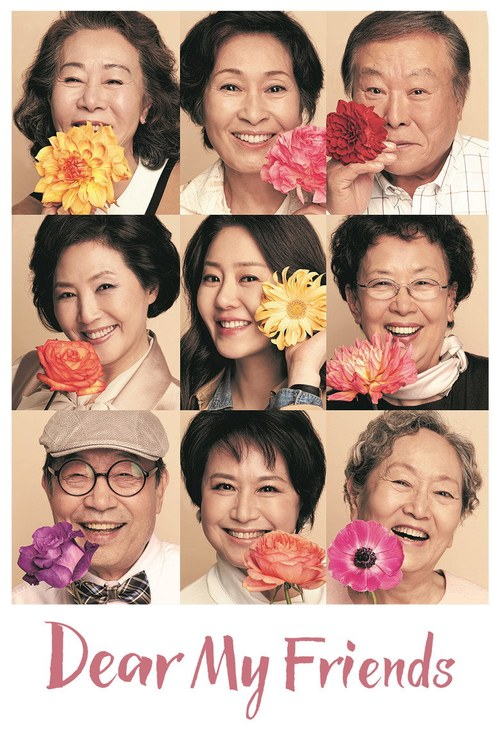
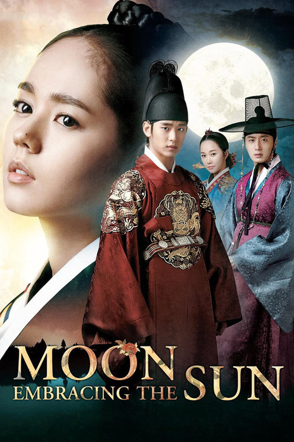
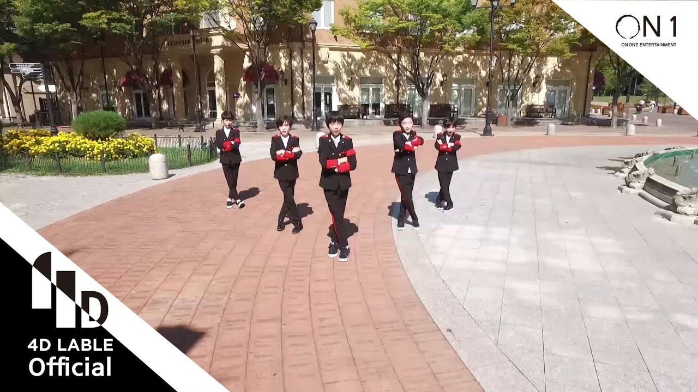
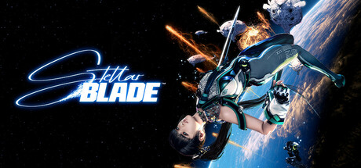
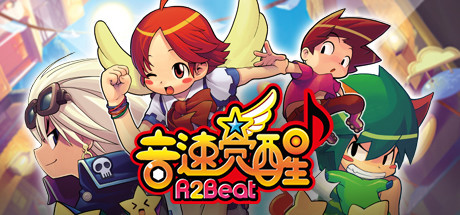
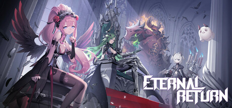
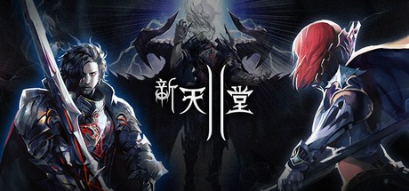
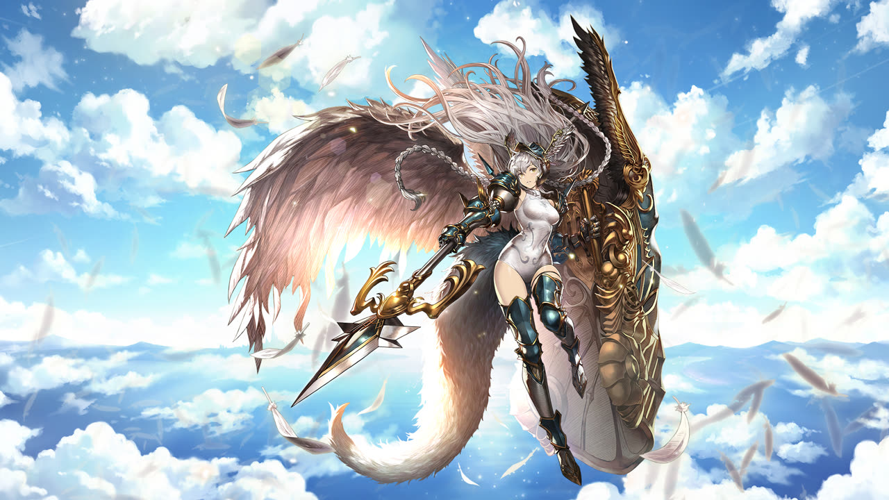
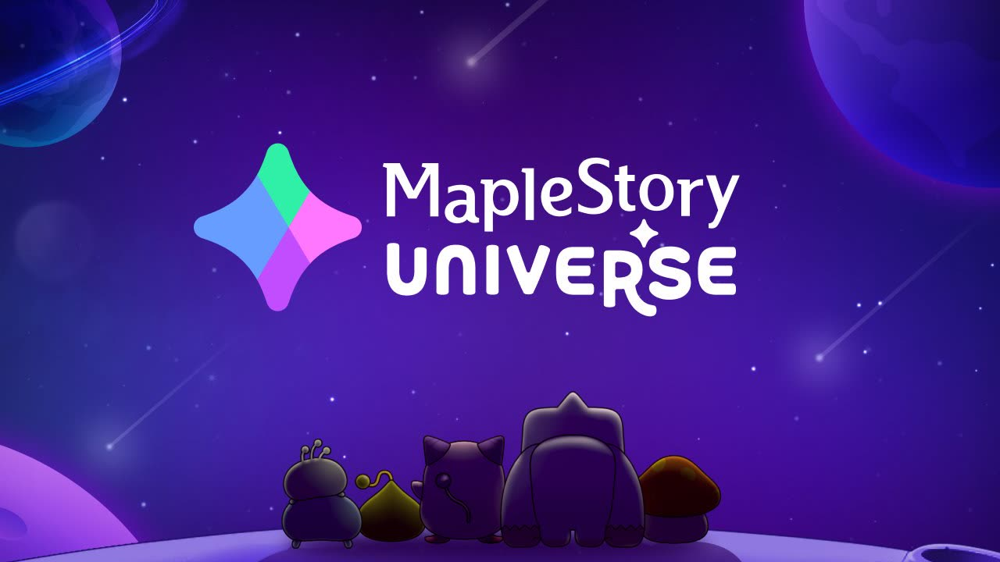

드라마 · 2025

폭군의 셰프 (2025)
조선 시대 폭군과 현대의 수셰프가 요리를 매개로 얽히는 사극. 2025년 방송, 음식과 궁정 권모가 결합된 작품.
중국 본토 시청자는 여기를 눌러 Netflix에 접속하세요.
이 사이트는 불법 복제본을 제공하거나 연결하지 않습니다.
A REASON · 선의에 대한 짧은 기록
무대가 밝아서가 아니라,
길모퉁이 고양이를 위해 누군가 물 한 그릇을 놓아두었기 때문이다.
TikTok 공유 글 하나와, 그 뒤에 있는 네 가지 이유.
한국 대중문화를 좋아하는 나 자신에게, 그리고 "왜?"라고 묻는 사람들에게.
그 공유 글
v.douyin.com/ETkls6EwUXo/
무대 이야기도, 신보 이야기도 없다. 오직 고양이 이야기뿐. 그다지 매끄럽지 않은 한마디인데도 "좋아한다"는 마음을 다시 땅으로 내려놓게 한다.
K-POP을 듣고 한국 드라마를 보다 보면 가끔 이런 질문을 받는다. "그래서 뭐가 좋다는 거예요?" 대개는 웃으며 넘겼지만, 이번에는 제대로 답하고 싶었다.
그래서 이 페이지를 만들었다. 변명도, 홍보물도 아니고, "이유"라는 두 글자를 그냥 펼쳐 적어 본 것뿐이다.
참고: 이 사이트는 개인 의견 페이지입니다. 확인되지 않은 수치를 인용하지 않으며 어떤 기관도 대변하지 않습니다.
네 가지 이유
선의는 디테일에 있다
눈에 잘 띄지 않는 물그릇, 치워지지 않은 상자 하나, 겨울에도 거두지 않은 작은 집. 사람의 마음을 누르게 하는 건 거창한 구호가 아니라, 고맙다는 말도 못 하는 생명을 위해 누군가 한 번 허리를 굽히는 일이다.
나는 그런 허리 굽힘을 좋아한다.
가장 작은 존재를 대하는 방식
건물이 높아도 좋고 조명이 밝아도 좋다. 다만 내가 궁금한 건, 말도 못 하고 보답도 못하며 요구조차 할 수 없는 그 하나가 이 도시의 고려 안에 들어 있었는가 하는 점이다.
고양이는 아주 가벼운 자인데도, 무거운 것을 달아낼 수 있다.
좋아한다는 게 면죄부는 아니다
어떤 곳을 좋아한다고 해서 그곳의 모든 것을 변호하는 건 아니고, 완벽하다고 상상하는 것도 아니다. 어디에나 복잡한 면이 있다. 보정된 사진 한 장이 아니라 실제 나라로 보는 것, 그게 좋아할 수 있는 전제라고 생각한다.
좋아할 만한 구체적인 순간을 좋아하되 내 판단은 남겨두는 것, 그게 "이유가 있다"는 말의 뜻이다.
내 주변으로 가져오기
화면 안에서만 끝난다면 그 마음은 너무 가볍다. 마음이 움직이면 사람은 자기 집 아래에서 작은 일을 하고 싶어진다. 깨끗한 물 한 그릇, 반려동물을 버리지 않기, 분양 대신 입양, 겨울 상자에 낡은 스웨터 한 장 깔아주기.
좋아하는 마음의 가장 좋은 모습은, 나까지 조금 더 다정해지는 것이다.
작은 일
선의는 꼭 큰일일 필요가 없다.
어두워지면 누군가에게 빛을 조금 남겨두겠다고 기억하는 일, 그 정도도 충분하다.
이 불을 켠 횟수는 0 번입니다.
이 숫자는 오직 당신의 브라우저 안에만 있습니다. 업로드도, 네트워크 통신도 없고, 다른 누구를 의미하지도 않습니다. 아주 작은 데서 시작해도 된다는 알림일 뿐입니다.
더 읽어보기
위 항목은 모두 공개된 페이지이며, 참고용으로만 소개합니다. 이 사이트는 그 안의 사실·수치·시점에 대해 검증하거나 보증하지 않으며, 이를 근거로 어떤 주장도 하지 않습니다.
운영자가 고른
마이너 한국 아티스트를 우선 추천
한국 드라마 보기
시청 버튼이 없는 작품은 정식 스트리밍 서비스를 확인하지 못했으며 서비스가 종료되었을 수 있습니다.
드라마 · 2025
조선 시대 폭군과 현대의 수셰프가 요리를 매개로 얽히는 사극. 2025년 방송, 음식과 궁정 권모가 결합된 작품.
중국 본토 시청자는 여기를 눌러 Netflix에 접속하세요.
이 사이트는 불법 복제본을 제공하거나 연결하지 않습니다.
드라마 · 2023
20년간 전업주부로 살아온 차정숙이 간 질병을 이겨내고 의사의 길로 돌아와 남편이 있는 병원에서 1년차 레지던트로 일하기 시작한다. 2023년 JTBC 의학 드라마, 엄정화·김병철 주연.
중국 본토 시청자는 여기를 눌러 Netflix에 접속하세요.
이 사이트는 불법 복제본을 제공하거나 연결하지 않습니다.
드라마 · 2023

죽은 남자가 여러 생에 빙의하며 죽음의 비밀을 파헤치는 판타지 스릴러. 2023년 TVING 공개, 전개가 빠르다.
중국 본토 시청자는 여기를 눌러 Netflix에 접속하세요.
이 사이트는 불법 복제본을 제공하거나 연결하지 않습니다.
영화 · 2020

알츠하이머를 앓고 있는 문희 할머니는 손녀가 당한 뺑소니 사고의 유일한 목격자입니다. 흐려지는 기억과 싸우며 아들과 함께 범인을 찾아나서죠. 2020년 한국 영화, 웃음과 눈물이 한 노인에게 모입니다.
중국 본토 시청자는 여기를 눌러 Netflix에 접속하세요.
이 사이트는 불법 복제본을 제공하거나 연결하지 않습니다.
드라마 · 2020

현대의 셰프 영혼이 조선 왕비의 몸에 들어가는 몸바꿈 사극 코미디. 신혜선·김정현 주연, 2020년 tvN 방송. 웃음과 궁정 권모를 함께 갖췄다.
중국 본토 시청자는 여기를 눌러 Netflix에 접속하세요.
이 사이트는 불법 복제본을 제공하거나 연결하지 않습니다.
드라마 · 2020

5년 전 세상을 떠난 엄마가 귀신으로 돌아와 49일 동안 남편과 딸 곁으로 돌아가려는 감동 드라마. 김태희·이규형 주연, 2020년 tvN 방송.
중국 본토 시청자는 여기를 눌러 Netflix에 접속하세요.
이 사이트는 불법 복제본을 제공하거나 연결하지 않습니다.
드라마 · 2016

귀신을 볼 수 있는 청년과 여귀신이 손잡고 악령을 퇴치하는 판타지 로맨스. 옥택연·김소현 주연, 2016년 tvN 방송. 공포와 코미디가 공존한다.
중국 본토 시청자는 여기를 눌러 Netflix에 접속하세요.
이 사이트는 불법 복제본을 제공하거나 연결하지 않습니다.
드라마 · 2016

중년 작가 아완의 시선으로 엄마와 엄마의 오랜 친구들을 그린 「황혼 청춘」。 늙음과 병, 가족과 이별을 웃음과 눈물로 받아들인다. 2016년 tvN 10주년 기획, 노희경 작가, 고현정·김혜자·나문희 등 주연. 제53회 백상예술대상 최우수작품상 수상작.
중국 본토 시청자는 여기를 눌러 Netflix에 접속하세요.
이 사이트는 불법 복제본을 제공하거나 연결하지 않습니다.
드라마 · 2015

명문 고교의 댄스 동아리와 거친 백호 동아리가 억지로 합쳐져 치어리딩 팀이 되고, 부딪히며 성장하고 사랑에 빠진다. 2015년 KBS 월화 드라마, 정은지·이원근 주연.
중국 본토 시청자는 여기를 눌러 Netflix에 접속하세요.
이 사이트는 불법 복제본을 제공하거나 연결하지 않습니다.
드라마 · 2015

톱 배우 지은호는 스물아홉 살 되던 해 사라진 첫사랑 은동을 평생 찾아왔다. 몇 해 뒤 자서전 대필을 계기로 기억을 잃은 서정은과 다시 마주치며 20년에 걸친 운명적인 사랑이 떠오른다. 2015년 JTBC 금토 드라마, 주진모·김사랑 주연.
중국 본토 시청자는 여기를 눌러 Netflix에 접속하세요.
이 사이트는 불법 복제본을 제공하거나 연결하지 않습니다.
드라마 · 2013
400년 전 조선에 떨어진 외계인이 대학 교수 도민준으로 오늘을 살아가며 톱스타 천송이와 별을 넘은 사랑을 한다. 2013년 SBS 수목 드라마, 김수현·전지현 주연.
중국 본토 시청자는 여기를 눌러 Netflix에 접속하세요.
이 사이트는 불법 복제본을 제공하거나 연결하지 않습니다.
드라마 · 2013

가난하지만 당당한 차은상이 미국에서 돌아온 재벌가 상속인 김탄과 학교에서 재회하며, 소년들은 왕관의 무게를 가늠한다. 2013년 SBS 수목 드라마, 이민호·박신혜 주연.
중국 본토 시청자는 여기를 눌러 Netflix에 접속하세요.
이 사이트는 불법 복제본을 제공하거나 연결하지 않습니다.
드라마 · 2012

조선 시대를 배경으로 왕위 다툼과 사랑을 엮은 사극. 김수현·한가인 주연, 2012년 MBC 작품으로 그해 최고 시청률을 기록했다.
중국 본토 시청자는 여기를 눌러 Netflix에 접속하세요.
이 사이트는 불법 복제본을 제공하거나 연결하지 않습니다.
드라마 · 2003

궁녀 장금이 요리와 의술로 신분의 편견을 뛰어넘어 임금의 첫 여성 주치의가 된다. 2003년 MBC 사극, 이영애·지진희 주연.
중국 본토 시청자는 여기를 눌러 Netflix에 접속하세요.
이 사이트는 불법 복제본을 제공하거나 연결하지 않습니다.
K-pop 듣기
한국 음악 · 2024

한국 아티스트 SEO EVE(서이브)의 「마라탕후루」. Green Universe Music 제작, 중독성 있는 바이럴 마이너 히트곡.
MV는 YouTube에 있습니다.
한국 음악 · 2019

한국 인디 아티스트 Minty(민티)의 「Arcadia(아르카디아)」. 1theK 채널 공개, 경쾌하고 산뜻한 마이너 넘버.
MV는 YouTube에 있습니다.
한국 음악 · 2018

댄스 신동 나하은의 2018년 첫 싱글 「So Special (feat. Microdot)」. 마이크로닷이 랩으로 참여한 일렉트로팝 댄스곡.
MV는 YouTube에 있습니다.
한국 음악 · 2017

한국 신인 그룹 U.sso.boy(유쏘보이)의 「Let’s Go Now」. 4D Label 제작, 에너지 넘치는 마이너 댄스.
MV는 YouTube에 있습니다.
한국 음악 · 2017

QQ뮤직에 2017-09-20 발매로 표기된 한국 곡 「미스코리아」입니다. 제목을 검색하면 이효리의 같은 이름 곡이 자주 나오지만, 이효리가 아닙니다.
QQ뮤직에는 MV가 없고 곡 페이지만 있습니다. 위 영상은 라이브 무대이며 공식 MV가 아닙니다. 발매일 2017-09-20.
한국 음악 · 2013

신사동 호랭이가 만들고 임창정과 김창렬이 부른 중독성 강한 댄스 곡. 슈퍼주니어 희철을 비롯해 U-KISS, 김수로 등 수십 명의 스타가 카메오로 출연했고, 쉬운 안무를 따라 하다 보면 어느새 몸이 흔들립니다. 2013년 발매, 『강남 스타일을 넘어선 신곡』이라 불렸습니다.
운영자의 QQ음악 링크(중국 대륙에서만 시청 가능): y.qq.com.
한국 음악 · 2013

Stellar의 세 번째 디지털 싱글 「공부하세요」. 2013-07-11 발매, 앨범 「Marionette」에 수록됐으며 그룹이 처음으로 가온 디지털 차트 100위권에 진입한 곡입니다.
운영자의 QQ뮤직 링크(중국 대륙에서만 시청 가능): y.qq.com. 발매일 2013-07-11.
한국 음악 · 2012

한국 개그송 「짜라빠빠」. 밈 댄스 영상으로 다시 유행. 정확한演唱 버전은 미상이며, 1985년 정광태 버전과 동요 리메이크 등도 있어 여기서는 단정하지 않습니다.
MV는 YouTube에 있습니다.
한국 음악 · 2004

중국 본토 외부 시청자는 여기를 눌러 YouTube에서 『문을 여시오』 MV를 보세요.
K-POP 플랫폼

한국 K-POP 미디어 플랫폼으로, YouTube, X, Instagram, Facebook 등 전 플랫폼 3500만 구독자를 보유하고 있습니다. K-POP 스타의 LIVE 공연, 댄스 비디오, 예능 프로그램, 인터뷰 콘텐츠를 제공하며, 중국어·일본어·영어·한국어 4개 언어를 지원합니다.
1theK는 한국 본토 플랫폼으로, VPN 없이 접속 가능하며 4개 언어 인터페이스를 제공합니다.
PC 게임
한국 · Netmarble · 2025

동명의 인기 웹툰을 원작으로 한 액션 RPG. 최약체 헌터 성진우가 각성해 가는 과정을 원작에 충실한 스토리와 통쾌한 액션 전투로 경험할 수 있습니다. 친구들과 4인 협동 전투도 즐길 수 있습니다.
Netmarble가 발행하며 Steam에서 플레이할 수 있습니다.
한국 · Shift Up · 2024

Shift Up이 개발하고 Sony가 발행한 액션 어드벤처. 플레이어는 이브가 되어 외계 생물에 침략된 포스트 아포칼립스 지구에서 전투와 탐험을 펼칩니다. 화려한 액션 디자인과 캐릭터 모델링으로 유명합니다.
원래 PlayStation 독점이었던 스텔라 블레이드는 2024년 Steam에 출시되었습니다. 중국어 인터페이스를 완벽 지원합니다.
한국 · Neowiz · 2023
Neowiz가 개발한 소울즈라이크 액션 RPG. 피노키오 동화를 다크 판타지 세계로 재해석. 정교한 고딕 미술 스타일과 탄탄한 전투 손맛으로 한국 3A 게임의 기념비적인 작품으로 평가받습니다.
Lies of P는 Steam, PlayStation, Xbox 등에서 플레이 가능합니다. 중국어 인터페이스와 자막을 지원합니다.
한국 · VALOFE · 2022

VALOFE가 내놓은 음악 레이싱 온라인 게임으로, 음악 비트와 롤러스케이트 레이스를 결합했다. 리듬에 맞춰 장애물을 피하며 결승점을 향해 달리고, 개인전·팀전과 다양한 곡과 난이도를 지원한다.
무료 플레이. Steam 페이지는 간체 중국어만 지원하며, 중국 본토 서버는 베이징 시유(北京喜游戏)가 서비스한다.
한국 · VALOFE · 2021

VALOFE가 선보인 멀티플레이어 온라인 오픈 월드 액션 게임. 넓은 야외 필드를 친구들과 탐험하고 팀 던전에 도전하며, 타격감 넘치는 전투로 세계를 뒤흔드는 음모를 막아냅니다.
현재 무료 게임으로 전환되어 Steam에서 플레이할 수 있습니다.
한국 · Nimble Neuron · 2020

Nimble Neuron이 개발한 멀티플레이어 온라인 전술 경쟁 게임. MOBA와 배틀로얄을 융합한 애니메이션 스타일 캐릭터 디자인으로, 아이템 합성과 조작 기술의 깊은 대항을 강조합니다.
영원회귀는 무료 게임으로, Steam에서 플레이 가능합니다. 완전한 중국어 인터페이스를 제공합니다.
한국 · Krafton · 2017

Krafton 산하 Bluehole이 개발한 배틀로얄 슈팅 게임. 현대 전술 경쟁 장르를 개척한 100인 공중 투하, 축소 구역 대항 플레이는 전 세계적으로 선풍을 일으켰으며, 누적 플레이어 수는 7500만 명을 돌파했습니다.
PUBG는 현재 무료 게임으로 전환되어 Steam과 콘솔에서 플레이 가능합니다. 중국어 인터페이스가 잘 갖춰져 있습니다.
한국 · NCSOFT · 2012

NCSOFT가 개발한 동양 무협풍 MMORPG. 경공 이동과 논타겟 전투, 화려한 무술 연출이 특징입니다. 한국 서버는 현재 NEO 버전으로 운영되고 있습니다.
한국 공식 서버(bns.plaync.com)를 안내합니다. 일본 서버는 2026년 3월 11일에 종료되었습니다.
한국 · Nexon · 2006

Nexon이 개발한 귀여운 카트 레이싱 온라인 게임으로, 드리프트 감각과 아이템전이 특징이다. 중국 본토는 톈스청이 서비스하며, 크레이지 아케이드 BnB와 캐릭터를 공유한다.
톈스청 운영, 중국 사이트는 popkart.tiancity.com.
한국 · T3 Entertainment · 2005

T3 Entertainment가 개발한 음악 댄스 게임으로, 비트에 맞춰 키를 눌러 춤을 추는 방식이다. 아시아 전역에서 인기를 끌고 e스포츠 무대에도 올랐으며, 중국 본토는 여우게임(久游网)이 지금도 서비스하고 있다.
중국 본토는 여우(久游) 서버를 쓴다. 영문판과 일문판은 일본 X-BEAT가 2016년 종료되어 대만 서버(MangoT5)를 게시하고, 한국어판은 지금도 업데이트되는 한빛온 서버를 게시한다.
한국 · NCSOFT · 2003

NCSOFT가 2003년에 선보인 판타지 MMORPG. 혈맹 공성전, 유저 주도 경제, 전직 클래스 체계로 유명하며 초기 온라인 게임의 대표작입니다.
한국 공식 서버(lineage2.plaync.com)를 안내합니다.
한국 · Nexon · 2003

Nexon이 개발한 캐주얼 대전 게임으로, 고전 봄버맨 방식에서 출발했다. 물풍선을 놓아 상대를 가두고 아이템을 쥐며 반응 속도를 겨룬다. 2003년 샨다(현 성취 게임즈)가 중국 본토에 들여와 PC방 시대 초기의 국민 캐주얼 게임이 되었다.
중국 서버는 bnb.sdo.com이며 성취 계정으로 로그인한다.
모바일 게임
한국 · NEOWIZ · 2023

NEOWIZ가 내놓은 어드벤처 RPG. 콘솔급 2D 그래픽과 Live 2D 캐릭터 애니메이션이 특징입니다. 3×4 칸 턴제 진형 전투와 가로·세로 화면 자유 전환을 지원하며 캐릭터와 스토리 호평을 받았습니다. 국제 버전은 번체 중국어를 지원합니다.
주의: 브라운더스트 2는 2023년에 출시된 정통 후속작으로, 기존작 『브라운더스트』(국제판 이름 Brave Nine)와는 다른 게임입니다. App Store, Google Play, QooApp에서 다운로드 가능합니다.
한국 · SHIFT UP · 2022

SHIFT UP이 개발하고 Level Infinite가 발행한 미소녀 슈팅 RPG 모바일 게임. 최상급 작화 기술과 초쾌감 전술 경험이 특징입니다. 한/영/일/번체중/간체중/독/태 다국어 인터페이스를 지원하며, 메인 스토리는 한/일/영 3개 언어 더빙을 제공합니다.
NIKKE는 다국어 인터페이스와 더빙을 지원하며, App Store, Google Play, QooApp에서 다운로드 가능합니다.
블록체인 게임 플랫폼
여기서는 플랫폼과 스튜디오를 중심으로 소개하며 개별 게임은 다루지 않습니다. 블록체인 게임은 가상 자산을 수반하므로 위험은 스스로 판단하시기 바랍니다.
위험 안내: 블록체인 프로젝트와 가상 자산은 가격이 크게 흔들릴 수 있습니다. 자금을 넣기 전에 손실을 감수할 수 있는지 확인하고, 본인의 경제 상황에 맞는 범위에서 무리하지 않게 참여하시기 바랍니다.
한국 · NEXUS / ONE · 2015

KOSDAQ 상장사 NEXUS가 만든 AI·블록체인 게임 플랫폼입니다. Cross 게임체인은 ONEchain으로 개명했고 한국 앱스토어 ONE Store도 인수했습니다. Seal M, ROHAN2, ROM: Golden Age 등을 운영하며 WEMIX 다음으로 한국에서 가장 활발한 게임 체인입니다.
플랫폼만 소개하며 개별 게임은 다루지 않습니다. 가상 자산이 수반되므로 위험은 스스로 판단하시기 바랍니다.
한국 · WEMADE · 2019

WEMADE 산하의 블록체인 게임 플랫폼으로 MIR4, 나이트크로우 등을 운영합니다. 지갑, 게임 토큰 및 NFT 거래를 제공하며 한국을 대표하는 Web3 게임 생태계 중 하나입니다.
플랫폼만 소개하며 개별 게임은 다루지 않습니다. 가상 자산이 수반되므로 위험은 스스로 판단하시기 바랍니다.
한국 · Nexon / NEXPACE · 2025

Nexon이 인가하고 NEXPACE가 운영하는 메이플스토리 IP 블록체인 생태계입니다. 핵심 게임 MapleStory N은 PC MMORPG로 NXPC/NESO 이중 토큰 체계와 NFT 아이템을 사용하며 간체 중국어를 포함한 다국어를 지원합니다.
플랫폼만 소개하며 개별 게임은 다루지 않습니다. 가상 자산이 수반되며, 남한 IP에서는 NFT 접근이 제한될 수 있습니다.
한국 · Planetarium Labs · 2019

한국의 기술 중심 Web3 게임 스튜디오로, 풀 온체인 MMORPG 『Nine Chronicles』, 한국 App Store 1위를 차지한 『Immortal Rising 2』, AI 게임 제작 플랫폼 Verse8이 대표작입니다. 자체 개발 온체인 엔진과 검증 가능한 게임 로직이 강점입니다.
스튜디오 공식 사이트로 개별 게임도 포함합니다. 가상 자산이 수반되므로 위험은 스스로 판단하시기 바랍니다.
운영자가 추천하는 내용을 AI가 생성
배지 기준: 양호 = 운영과 지표가 성장 중; 보통 = 운영 중이지만 뚜렷한 우려가 있음. 공개 정보에 기반한 참고용 평가입니다.
가속기
아래 추천 코드는 운영자가 공유한 것입니다. 교환 규정과 유효 기간은 각 공식 사이트 안내를 따릅니다.
도구 · 외성자 · 무료 가속기

기본 기능이 영구 무료인 PC 게임 가속기로 Steam 등 주요 플랫폼의 온라인 플레이를 지원합니다. 노드 일시정지와 시간 적립이 가능합니다. 운영자가 드립니다: 50시간 뉴비 카드!외성자 가속기 PC 버전을 열고 교환 창에 전용 코드 574567을 입력하세요.
코드 574567로 50시간 교환 가능. 계정별 규정과 유효 기간은 클라이언트 안내를 따릅니다.
도구 · 급리 · e스포츠 회선
KEEPSAKE · 기록
이 스크린샷은 이 사이트의 주인이 AI에게 건넨 것입니다. 아무리 검색해도 이제 그 페이지가 나오지 않는다. 위의 어떤 이유에도 속하지 않고, 누군가 대신 결론을 내려주려는 것도 아니다. 그저 어떤 구체적인 순간이 시간에 씻겨 가길 원치 않았을 뿐이다. 그래서 여기 부록으로 두었다.

이 그림이 확인해 주는 건, 찍힌 그 한 화면뿐이다. 같은 내용을 다룬 공개 기사는 한때 몇 곳의 아카이브에 남아 있었다. 링크와 현재 상태는 이 페이지에 적어 두었다. 이 사이트는 그 세부 내용을 검증하지 않고, 표현을 보증하지 않으며, 어떤 입장도 대변하지 않는다. 또한 위의 네 가지 이유를 뒷받침하는 근거도 아니다. 무언가를 기억하는 것과 그것에 대해 결론을 내리는 것은 다르다.
잊고 싶지 않다는 마음은, 종이 한 장을 펴서 책 사이에 끼워 두는 일일 때도 있다.
같은 기사의 공개 아카이브 · 외부 링크
2026-11-13 확인: 인민망과 산시신문망 2개 외부 링크는 모두 끊겨 있으며 404를 반환한다. 정상적으로 읽을 수 있는 곳은 펑황망뿐이다. 링크 상태는 언제든 바뀔 수 있으며 이 기록은 한 번의 확인 결과일 뿐이다. 끊긴 2개 외부 링크는 본 페이지(a-reason-for-korea)를 가리키는 동일 링크로 남겨 두었다.
기록 · 영화와 역사
단서는 국내 영화 소개 페이지였습니다. 제목, 감독, 출연진, 재생 링크만 늘어놓고 2017년 한국 영화 《택시운전사》를 그냥 「드라마」로 분류했으며, 제목 뒤에 있는 광주 민주화 운동은 전혀 언급하지 않았습니다. 본 사이트는 이 서술을 그대로 따르지 않습니다. 아래는 영문·국문 위키피디아의 공개 자료로 배경과 수치를 보충했고, 출처는 끝에 하나씩 적었습니다.
1980년 5월 18일부터 27일까지 5·18 광주 민주화 운동이 일어났습니다. 전두환 군사정권은 계엄을 선포하고 광주를 봉쇄했으며, 군인들이 학생과 시민에게 총을 쐈습니다. 저항은 열흘간 이어졌습니다. 영문 위키피디아가 인용한 추정 사망자는 최대 약 2,500명입니다. 정확한 수치는 여전히 논쟁이 있지만, 사건 자체는 논쟁의 대상이 아닙니다.
당시 한국에서는 오랫동안 금기시되어 관련 보도와 책이 검열되거나 출판이 금지됐습니다. 힌츠페터는 봉쇄된 광주에서 촬영한 필름을 반출했고 국제 언론을 통해 방송됨으로써, 군이 민간인에게 발포했다는 사실이 외부에 알려졌습니다. 이 영화가 다루는 것이 바로 그 역사이며, 일반 「드라마」와 다른 지점이 여기에 있습니다.
영화에는 각색이 있습니다. 추격과 희생 장면은 대부분 창작이고, 실존 운전사의 행적은 거의 기록이 남아 있지 않습니다. 창작을 사료로 취급하거나 「창작이 있으니」 역사 전체를 허구로 몰아붙이는 모두가 이 영화의 진짜 내용을 놓치게 만듭니다. 본 사이트는 재생 링크를 제공하지 않으며, 확인 가능한 사실과 출처만 기록합니다.
외부 출처 · 2026-11-24 확인, 모두 접속 가능
위 다섯 링크는 2026년 11월 24일 확인 당시 모두 HTTP 200으로 접속됐습니다. 본 기록은 이 공개 항목들을 근거로 정리했으며, 서술의 자세한 내용은 원문에 따릅니다. 단서가 된 영화 사이트는 인용하지 않으며 재생 링크도 게시하지 않습니다.